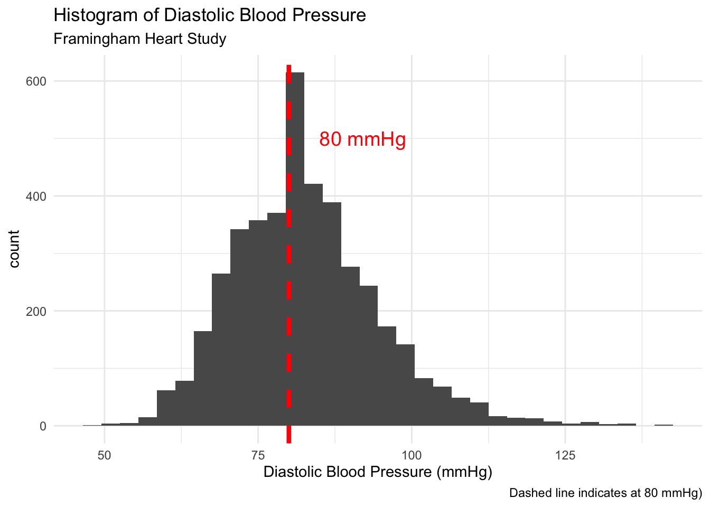
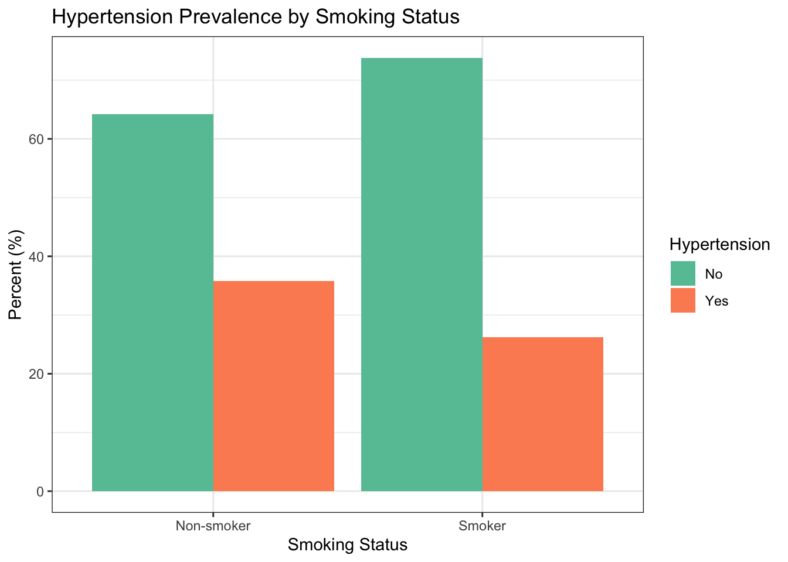
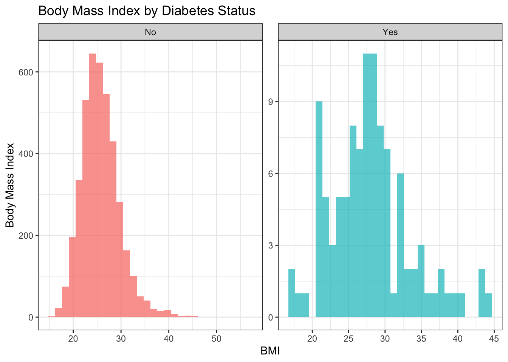
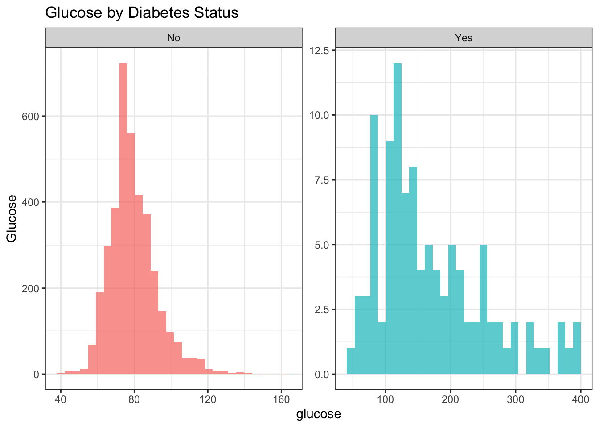
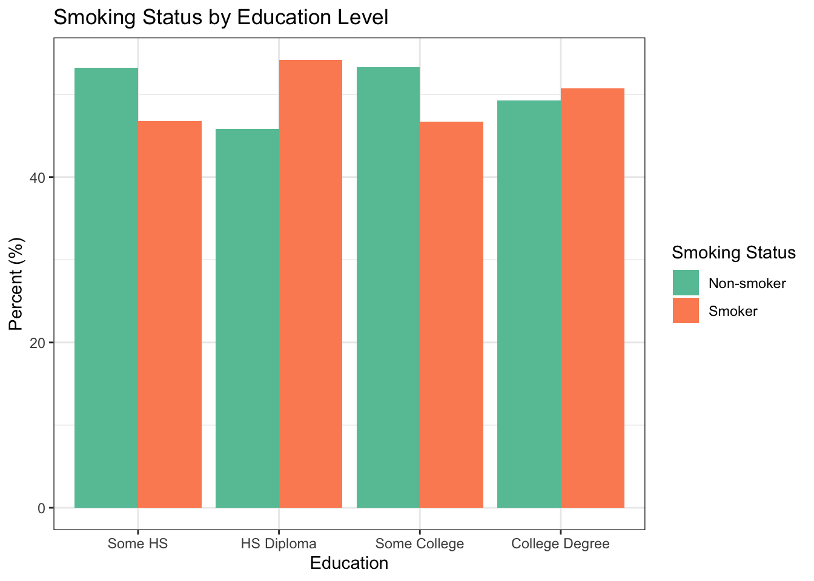

library(tidyverse)
library(this.path)
this.dir <- this.dir()
setwd(this.dir)
framingham <- read_csv("../../data/framingham.csv") |>
mutate(
male = factor(male, levels = c(0, 1),
labels = c("Female", "Male")),
currentSmoker = factor(currentSmoker, levels = c(0, 1),
labels = c("Non-smoker", "Smoker")),
BPMeds = factor(BPMeds, levels = c(0, 1),
labels = c("No", "Yes")),
prevalentStroke = factor(prevalentStroke, levels = c(0, 1),
labels = c("No", "Yes")),
prevalentHyp = factor(prevalentHyp, levels = c(0, 1),
labels = c("No", "Yes")),
diabetes = factor(diabetes, levels = c(0, 1),
labels = c("No", "Yes")),
TenYearCHD = factor(TenYearCHD, levels = c(0, 1),
labels = c("No", "Yes")),
education = factor(education, levels = 1:4,
labels = c("Some HS", "HS Diploma",
"Some College",
"College Degree"))
)Day 5 Lab: Inference
SC INBRE Biostatistics Summer Intensive 2026
Exercise 1 — One-Sample t-Test.
The normal resting diastolic blood pressure for adults is considered to be around 80 mmHg.
- Make a histogram of
diaBPin the Framingham cohort. Does the distribution look approximately Normal? Add a vertical line at 80 mmHg.
ggplot(framingham, aes(x = diaBP)) +
geom_histogram(binwidth = 3) +
geom_vline(xintercept = 80, linetype = "dashed",
color = "red", linewidth = 1.5) +
annotate("text", x = 85, y = 500,
label = "80 mmHg",
hjust = 0, size = 5, color = "red") +
theme_minimal() +
labs(
title = "Histogram of Diastolic Blood Pressure",
subtitle = "Framingham Heart Study",
caption = "Dashed line indicates at 80 mmHg)",
x = "Diastolic Blood Pressure (mmHg)"
)
- Run a one-sample t-test testing whether mean diastolic BP in the cohort differs from 80 mmHg. Report the test statistic, degrees of freedom, p-value, and 95% CI.
t.test(framingham$diaBP, mu = 80)
One Sample t-test
data: framingham$diaBP
t = 15.842, df = 4239, p-value < 2.2e-16
alternative hypothesis: true mean is not equal to 80
95 percent confidence interval:
82.53916 83.25636
sample estimates:
mean of x
82.89776 The p-value is \(<2.2 x 10^{-16}\) (clearly significant), and the 95% CI is (82.5, 83.3).
- Write a 2–3 sentence interpretation of the result. Is the difference statistically significant? Is it practically meaningful? (Think about what a difference of a few mmHg means clinically.)
The mean diastolic BP is clearly greater than 80 in the Framingham cohort. While statistically significant, the 95% CI (82.5, 83.3) indicate the mean is only a few points larger than 80 mmHg.
Exercise 4 — Chi-Square Test.
Is smoking status associated with prevalent hypertension in this cohort?
- Create a contingency table of
currentSmokerbyprevalentHypusingtable(). What are the cell counts? Do all expected counts look large enough for a chi-square test (rule: all expected counts ≥ 5)?
# Always look at the raw counts first
tab <- table(Smoker = framingham$currentSmoker,
Hypertension = framingham$prevalentHyp)
tab Hypertension
Smoker No Yes
Non-smoker 1377 768
Smoker 1546 549Let’s look at the expected cell counts:
chisq.test(tab)$expected Hypertension
Smoker No Yes
Non-smoker 1478.735 666.2653
Smoker 1444.265 650.7347Clearly they are all greater than 5.
- Run
chisq.test()on the table. Report \(\chi^2\), degrees of freedom, and p-value.
result_chisq <- chisq.test(tab)
result_chisq
Pearson's Chi-squared test with Yates' continuity correction
data: tab
X-squared = 45.158, df = 1, p-value = 1.818e-11# Always check expected counts -- all should be >= 5
result_chisq$expected Hypertension
Smoker No Yes
Non-smoker 1478.735 666.2653
Smoker 1444.265 650.7347- Compute the proportion with hypertension separately for smokers and non-smokers using
group_by()andsummarize(). How large is the difference in proportions?
# Get the proportions for smokers and non-smokers.
prop_values <- framingham |>
filter(!is.na(currentSmoker), !is.na(prevalentHyp)) |>
group_by(currentSmoker) |>
summarise(
prop_hyper = mean(prevalentHyp == "Yes")
)
prop_values# A tibble: 2 × 2
currentSmoker prop_hyper
<fct> <dbl>
1 Non-smoker 0.358
2 Smoker 0.262Now, calculate the difference:
round(prop_values$prop_hyper[1] - prop_values$prop_hyper[2], 4)[1] 0.096The difference in proportions is 0.096 (9.6% difference) where smokers have a lower prevalance of hypertension.
- Make a grouped bar chart showing hypertension prevalence by smoking status. Use
geom_col()after computing proportions withdplyr.
framingham |>
filter(!is.na(currentSmoker), !is.na(prevalentHyp)) |>
group_by(currentSmoker, prevalentHyp) |>
summarize(n = n(), .groups = "drop") |>
group_by(currentSmoker) |>
mutate(pct = n / sum(n) * 100) |>
ggplot(aes(x = currentSmoker, y = pct, fill = prevalentHyp)) +
geom_col(position = "dodge") +
scale_fill_brewer(palette = "Set2") +
labs(x = "Smoking Status", y = "Percent (%)",
fill = "Hypertension",
title = "Hypertension Prevalence by Smoking Status") +
theme_bw()
- Write a 2–3 sentence interpretation. Is the association statistically significant? Is the effect size meaningful?
The difference in hypertension prevalance is statistically and practically significant. The overall difference in prevalance is 9.6% indicating a markedly smaller prevalance of hypertension in the smoking group…. weird.
Exercise 5 — Choose the Right Test.
For each of the following questions, (i) state which test you would use and why, (ii) check the relevant assumption(s), and (iii) run the test and interpret the result.
Question A. Is mean BMI different between diabetic and non-diabetic participants?
Here we have a countinuous outcome variable (BMI) and we want to test if it is different by a categorical (yes/no) variable. A two sample t-test is appropriate here.
To run a two sample t-test we need a large sample size or data that are relatively normally distributed. As a result, we’ll look at the histogram of BMI by diabetes status.
framingham |>
ggplot(aes(x = BMI, fill = diabetes)) +
geom_histogram(alpha = 0.7, show.legend = FALSE) +
facet_wrap(~diabetes, scales = "free") +
labs(y = "Body Mass Index",
title = "Body Mass Index by Diabetes Status") +
theme_bw()
We have a large enough sample of non-diabetics that we don’t need to worry about the distribution. There are not as many diabetics (only 109), so the distribution (which is right skewed) is more worrisome. However, with 109 we should be OK.
# Group-level summaries first
framingham |>
group_by(diabetes) |>
summarize(
n = n(),
mean_bp = mean(BMI, na.rm = TRUE),
sd_bp = sd(BMI, na.rm = TRUE)
)# A tibble: 2 × 4
diabetes n mean_bp sd_bp
<fct> <int> <dbl> <dbl>
1 No 4131 25.7 4.02
2 Yes 109 28.0 5.50# Welch two-sample t-test (default -- does not assume equal variances)
t.test(BMI ~ diabetes, data = framingham)
Welch Two Sample t-test
data: BMI by diabetes
t = -4.2225, df = 108.97, p-value = 5.027e-05
alternative hypothesis: true difference in means between group No and group Yes is not equal to 0
95 percent confidence interval:
-3.320315 -1.199001
sample estimates:
mean in group No mean in group Yes
25.74352 28.00318 We can see that we get a significant difference between the groups. We can repeat with the Wilcoxon test, if we are worried about the normality assumption.
wilcox.test(BMI ~ diabetes, data = framingham,
conf.int = TRUE) # request the Hodges-Lehmann CI
Wilcoxon rank sum test with continuity correction
data: BMI by diabetes
W = 162507, p-value = 3.697e-06
alternative hypothesis: true location shift is not equal to 0
95 percent confidence interval:
-2.909983 -1.199963
sample estimates:
difference in location
-2.050064 Which gives the same result. Diabetics appear to have a larger average BMI than non-diabetics.
Question B. Is mean glucose different between diabetic and non-diabetic participants? (Make a histogram of glucose within each group first. Does the distribution look Normal? Does your answer change which test you use?)
Again, we have a countinuous outcome variable (glucose) and we want to test if it is different by a categorical (yes/no) variable. A two sample t-test is appropriate here.
Let’s look at the histogram of the outcome.
framingham |>
ggplot(aes(x = glucose, fill = diabetes)) +
geom_histogram(alpha = 0.7, show.legend = FALSE) +
facet_wrap(~diabetes, scales = "free") +
labs(y = "Glucose",
title = "Glucose by Diabetes Status") +
theme_bw()
# Group-level summaries first
framingham |>
group_by(diabetes) |>
summarize(
n = n(),
mean_glu = mean(glucose, na.rm = TRUE),
sd_glu = sd(glucose, na.rm = TRUE)
)# A tibble: 2 × 4
diabetes n mean_glu sd_glu
<fct> <int> <dbl> <dbl>
1 No 4131 79.5 13.0
2 Yes 109 170. 84.2Similar to before, the diabetic group might lead us to use the Wilcoxon since the sample size is smaller and the data are right skewed. Again, with n=109 we should be ok though.
Also, notice that the standard deviation is 13.0 for non-diabetics and 84.2 for diabetics. This is a situation where we don’t want to assume equal variances –t.test doesn’t assume equal variances by default, so we don’t have to do anything.
# Welch two-sample t-test
t.test(glucose ~ diabetes, data = framingham)
Welch Two Sample t-test
data: glucose by diabetes
t = -11.048, df = 104.14, p-value < 2.2e-16
alternative hypothesis: true difference in means between group No and group Yes is not equal to 0
95 percent confidence interval:
-107.15217 -74.53985
sample estimates:
mean in group No mean in group Yes
79.48732 170.33333 wilcox.test(glucose ~ diabetes, data = framingham,
conf.int = TRUE) # request the Hodges-Lehmann CI
Wilcoxon rank sum test with continuity correction
data: glucose by diabetes
W = 39657, p-value < 2.2e-16
alternative hypothesis: true location shift is not equal to 0
95 percent confidence interval:
-79.99995 -57.00003
sample estimates:
difference in location
-67.00004 Clearly, the average glucose values are much higher in the diabetic group (as expected).
Question C. Is education level associated with smoking status? (Both variables are categorical – what test applies here?)
Since these are both categorical, we’ll use a chi-squared test.
# Always look at the raw counts first
tab <- table(Education = framingham$education,
Smoking = framingham$currentSmoker)
tab Smoking
Education Non-smoker Smoker
Some HS 915 805
HS Diploma 574 679
Some College 367 322
College Degree 233 240# Proportions within each education group (row proportions)
prop.table(tab, margin = 1) |> round(3) Smoking
Education Non-smoker Smoker
Some HS 0.532 0.468
HS Diploma 0.458 0.542
Some College 0.533 0.467
College Degree 0.493 0.507# Visualize before testing
framingham |>
filter(!is.na(currentSmoker), !is.na(education)) |>
group_by(currentSmoker, education) |>
summarize(n = n(), .groups = "drop") |>
group_by(education) |>
mutate(pct = n / sum(n) * 100) |>
ggplot(aes(x = education, y = pct, fill = currentSmoker)) +
geom_col(position = "dodge") +
scale_fill_brewer(palette = "Set2") +
labs(x = "Education", y = "Percent (%)",
fill = "Smoking Status",
title = "Smoking Status by Education Level") +
theme_bw()
result_chisq <- chisq.test(tab)
result_chisq
Pearson's Chi-squared test
data: tab
X-squared = 18.431, df = 3, p-value = 0.0003584# Always check expected counts -- all should be >= 5
result_chisq$expected Smoking
Education Non-smoker Smoker
Some HS 868.9432 851.0568
HS Diploma 633.0150 619.9850
Some College 348.0825 340.9175
College Degree 238.9594 234.0406All expected counts are well above 5, so the chi-square approximation is valid.
The chi-squared test shows that there is a significant association between education level and smoking status. However, the difference in the proportion of smokers doesn’t follow an obvious pattern by the natural ordering of education level. For example, Some HS and Some College have the highest proportion of non-smokers, while HS Diploma has the lowest.